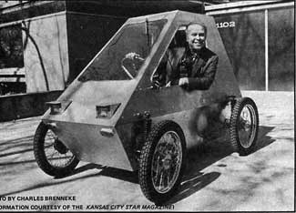

In Issue No. 33, we gave MOTHER's readers a look at Bob Way's single-cylinder, three-wheeled "Wayfarer", and mentioned that "a whole bunch of other folks are also working on ultra-light, ultra-efficient town cars, too". Well, here's another member of that elite group of hardy pioneers: Al Yanda . . . a Kansas City architect with a particular disdain for Detroit's two-ton gas-guzzling status symbols, and a very special talent for putting together his own "better idea". In this case, it's a sleek little electric runabout he built for somewhere around $800.
Al's not the kind of guy to jump feet first into a project, and then pull his head in second . . . instead, he designed a 20-inch, to-scale cardboard model of his brainstorm-just to make sure everything fit the way he wanted, y'know-then proceeded to build a full-size plywood prototype (just to make doubly sure), and then went to work on the real thing. And his painstaking planning shows.
Take a look at the body, for instance. Al tossed fancy appearances to the wind-literally-and come up with a lightweight sheet aluminum structure specifically designed to offer minimum air and gravity resistance. And what's beneath it all sounds a little like a promotion sheet for one of those "sexy" European jobs: four-wheel independent suspension, front and rear disc brakes , rack-and-pinion steering, and "tuck-away" headlights. And there are a number of fairly radical innovations, too, like low-friction Delrin fittings to cut the number of lubrication points down to a single great big one (on the steering column), and a hand-operated crank windshield wiper for rainy days.
But the real heart of the matter is what makes Al's runabout run. A total of 250 pounds of the 550-pound car is batteries ... four 6-volt Gould lead-acid units, hooked up to two permanent magnet Bosch 1.14-horsepower motors. A fan belt connects each of the drive units to a pulley wheel fixed to the car's split rear axle. When Mr. Yanda wants to go, he simply pushes a floor pedal that engages either two, three, or four of the batteries at a time . . . and he's off. Top speed is 35 mph-plus, with a range of around 30 or 35 miles per charge. Just right for non-polluting jaunts to work, or the neighborhood grocery store.
Will success spoil Al Yanda? Not a chance . . . by the time you read this, the architect/inventor will probably have added side windows, Teflon hubcaps, and more efficient springs to his little vehicle. And he plans to install a regenerative braking mechanism, too, that will charge the batteries every time he hits the brakes. Here's a man who knows that once you've got something good, you can always make it better!
Which-when you think about it-is a lot more than can be said for some of the "professional" auto makers up in Motor City.
|
 by Charles Brenneke Al Yanda in his ultra-light, utlra-efficient electric town car. |
|
|